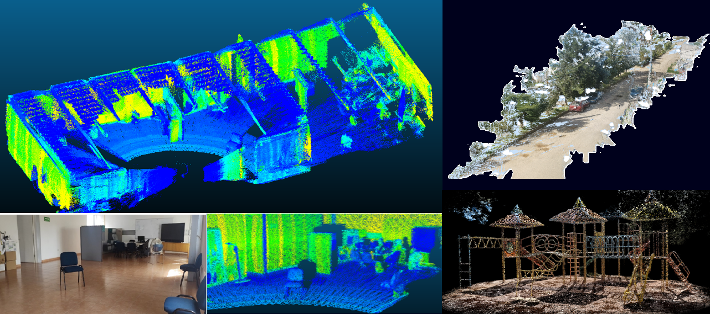
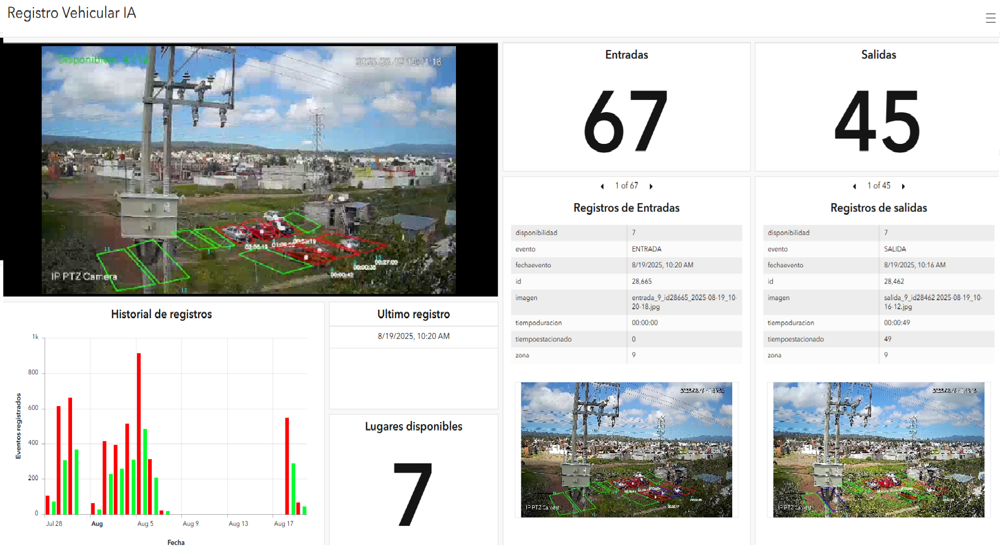
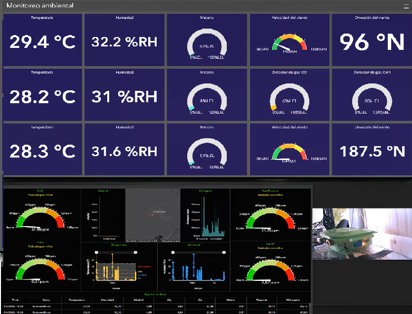
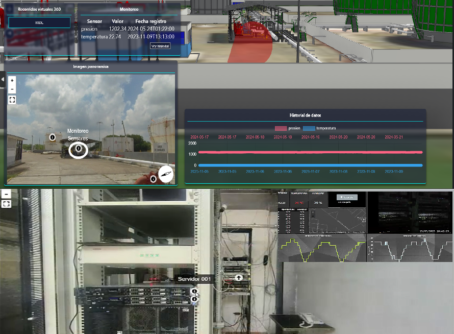
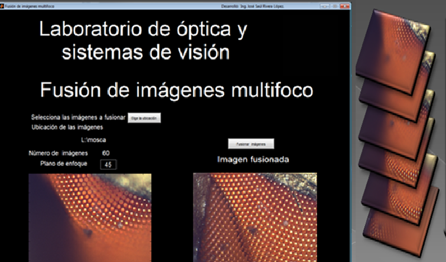
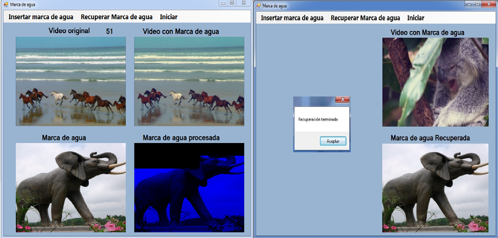

Doctor en Optomecatrónica e Ingeniero en Sistemas Computacionales especializado en Inteligencia Artificial, Visión Computacional, IoT, Sistemas Geoespaciales y Desarrollo de Software. Experiencia en el diseño e implementación de soluciones que integran software, hardware, sensores industriales, cámaras inteligentes, GPS, LiDAR y procesamiento de datos en tiempo real. He participado en el desarrollo de proyectos de visión artificial, gemelos digitales, monitoreo industrial, microservicios, rastreo vehicular,aplicaciones geoespaciales, drones y sistemas inteligentes basados en IA para aplicaciones industriales y de investigación.
Proyectos desarrollados
Publicaciones científicas
Machine Learning, Deep Learning y visión artificial
Sistemas embebidos, sensores y Sistemas Inteligentes
LiDAR y sistemas geoespaciales
Backend y microservicios

Soy desarrollador de software e investigador enfocado en la creación de sistemas inteligentes que combinan inteligencia artificial, visión computacional, IoT y tecnologías geoespaciales. Mi experiencia incluye el desarrollo de aplicaciones backend y frontend, plataformas de monitoreo industrial, plataformas GIS, sistemas enbebidos, sistemas de visión artificial, procesamiento de imágenes, integración de sensores industriales, cámaras, sistemas GPS, captura LiDAR y arquitecturas basadas en microservicios. Me interesa especialmente el desarrollo de soluciones capaces de transformar datos complejos en herramientas útiles para la toma de decisiones y la automatización de procesos.
Universidad Politécnica de Tulancingo
Universidad Politécnica de Tulancingo
Universidad Politécnica de Tulancingo
Desarrollo de software y aplicaciones web a la medida, diseñados para optimizar procesos y adaptarse a las necesidades específicas.
Desarrollo e integración de modelos de machine learning y deep learning aplicados a automatización, visión artificial y análisis de datos.
Procesamiento digital de imágenes y video, detección en tiempo real e integración de cámaras inteligentes.
Desarrollo de soluciones IoT utilizando ESP32, Raspberry Pi, Jetson y sensores industriales.
Procesamiento geoespacial, integración GIS, LiDAR y generación de nubes de puntos.
Integración, programación y manipulación de drones.
Tecnologías utilizadas en backend, inteligencia artificial, sistemas embebidos y plataformas geoespaciales.
Desarrollo de plataformas inteligentes para monitoreo industrial, sistemas geoespaciales, visión computacional, automatización de sistemas y aplicaciones basadas en inteligencia artificial. Participación en integración de sensores industriales, cámaras inteligentes, sistemas LiDAR, dispositivos GPS y sistemas embebidos para procesamiento y análisis de información en tiempo real. Diseño de APIs, microservicios y aplicaciones para visualización y gestión de datos.
Desarrollo y mantenimiento de software empresarial, integración de microservicios, análisis de requerimientos y automatización de procesos internos.
Investigación enfocada en procesamiento digital de imágenes, visión computacional, momentos ortogonales, inteligencia, artificial y análisis matemático avanzado.
Impartir clases de diferentes asignaturas en la carreras de Sistemas computacionales, Electrónica y telecomunicaciones y Robótica.
Sistemas inteligentes desarrollados para monitoreo industrial, visión por computadora, automatización, GIS, IoT, inteligencia artificial y análisis geoespacial.
Desarrollo e implementación de una dispositivo portátil para captura de nubes de puntos georreferenciadas para aplicaciones de cartografía, monitoreo ambiental, análisis territorial y modelado. El sistema integra sensores LiDAR, cámaras RGB, GPS e IMU para sincronización y procesamiento la información obtenida, para reconstrucción 3D de nubes de puntos con color en tiempo real y precisión centimétrica.

Desarrollo de Sistemas de visión artificial para detección automática, clasificación análisis de objetos en tiempo real integrando modelos de IA, cámaras industriales, procesamiento de video y utilizando modelos CNN y OpenCV. Aplicado a escenarios industriales para automatización, monitoreo, análisis y reconocimiento.

Plataforma para monitoreo industrial orientada a visualización, análisis histórico y gestión remota de procesos en tiempo real, mediante sensores industriales, dashboards interactivos y datos georreferenciados. Permite supervisión en tiempo real y soporte para toma de decisiones basada en datos.

sistema desarrollado para monitoreo de flotas, visualización de rutas, seguimiento en tiempo real y análisis histórico de trayectorias.

Desarrollo de tableros interactivos para el monitoreo de sensores industirales y ambientales para análisis de informacion en tiempo real y almacenamiento histórico.

Desarrollo de plataforma de recorridos virtuales y visualizacion de informacion basados en imagenes 360.

Desarrollo de software que permite combinar la informacion obtenida de muestras microscopicas.

Desarrollo de aplicacion y algoritmos de procesamiento digital para cifrado y protección de información multimedia aplicada a imágenes, audio y video.

Integración y programación de drones utilizando sensores y algoritmos de inteligencia artificial para detección de objetos, navegación y automatización de vuelo.

Investigación enfocada en visión computacional, procesamiento digital de imágenes, momentos ortogonales e inteligencia artificial aplicada.
Investigación enfocada en la implementacion de algoritmos optimizados para el cálculo rápido y eficiente de momentos ortogonales 3D aplicados al análisis avanzado de imágenes y nubes de puntos tridimencionales.
Puplicación de capítulo de libro “Recent Progress in Image Moments and Moment”, “Science Gate Publishing. Se enfoca en la aplicación de algoritmos matemáticos y computacionales para extraer características numéricas de imágenes (2D) y objetos (3D) de manera precisa y sin redundancia de información.
Aplicación de aprendizaje profundo y momentos 3D para reconocimiento y clasificación inteligente de objetos.
Propone un método novedoso mediante algoritmos para corregir problemas de inestabilidades numéricas y los errores de precisión que se producen al generar estos polinomios de alto orden para el procesamiento de imágenes, el reconocimiento de patrones y la compresión de datos.
Artículo de investigación y una técnica criptográfica que consiste en ocultar o cifrar imágenes dentro de secuencias de video usando matemáticas avanzadas.
Estancia doctoral enfocada en diseño de software para caracterización y manipulación de cámaras Time of Flight (ToF).
Aplicaciones de Machine Learning, Deep Learning, Visión Artificial y Automatización.
Disponible para proyectos relacionados con: Inteligencia Artificial, Visión Computacional, IoT, GIS, LiDAR, Automatización Industrial y Desarrollo de Software.